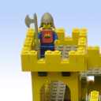

|
(caption) |
Drag the mouse in the image to move the object. |
// Placeholder for dynamically loaded shader code
A basic halftone pattern consists of a grid of round dots. We create this pattern by computing the distance to the nearest point in a square grid, and setting the fragment color to black or white depending on whether we are inside or outside a certain radius.
Note that we are not using an if-else statement, but a combination of step() and mix() functions. This is the proper way of expressing a conditional to select a color in a shader. The reason will become apparent in step 3.
Because the human visual system is tuned to perceive horizontal and vertical lines and features more clearly than other angles, it is common practice in halftoning to rotate the grid 45 degrees. This is a simple coordinate transformation, best performed by a 2x2 matrix multiplication.
Because of the thresholding, the circular dots have infinitely crisp edges and alias terribly. Aliasing is a very common problem for procedural textures, but it is mostly a simple matter to avoid it, or at the very least reduce it. For the kind of thresholding operation we perform in this case, we need to compute the variation of the thresholded function across the size of one fragment (typically one pixel) and perform a smooth blend between black and white across the width of one fragment. Thereby, if a fragment is sampled at a point near the boundary between the two extremes, it will be assigned a color which is a mix of the two.
The correct and general way to do analytic anti-aliasing of a procedural pattern is to use the smoothstep() function to replace all step() functions, and use the automatic derivatives dFdx() and dFdy() to compute the step width. This enables fully anisotropic anti-aliasing of a high quality. The custom function aastep() below demonstrates this.
Automatic derivatives are an optional extension in WebGL, and some implementations may not support it. If the extension is unavailable, we take a different, simplistic approach. To do it right without the convenience of auto derivatives requires explicit knowledge of the window size, the view transformation, the gradient in texture space and the relation between texture coordinates and world coordinates. To keep the code reasonably easy to understand, we stick with an imperfect isotropic anti-aliasing that works well enough face-on, but blurs the pattern too much in slanted views. Most WebGL implementations today (2012) support the auto derivatives extension, so this is mostly not a problem.
The purpose of halftoning is to reproduce an image. A varying reflectance is simulated by using black and white in different average proportions across the surface. We use a texture as input, and vary the threshold for the dot radius to make the white area proportional to the reflectance. Don't forget that the area of a circle varies with the square of its radius.

The coarse halftoning in our example removes most fine
details in the image, so we use a small 128x128 texture.
We use the green channel of the RGB image as a grayscale
value for now. Color will be added later, in step 8.
When the circles start touching each other, at radius 1.0, the area coverage is pi/4 or around 0.785, and after that the relation between radius and area coverage gets a little more complicated. We choose to ignore that and map color values in the range 0 to 1 to a dot radius of 0.0 to 1.0 for clarity. As a consequence, the overall color will be too bright and desaturated, but the visual appearance of the pattern will be nice and clear.
Depending on your particular OpenGL implementation, zooming in close on the pattern may look bad, revealing ugly sawtooth edges for the spots where the input image has a strong gradient, i.e. where dots change their radius rapidly. This happens because the built-in texture sampling assumes you are going to use the sample as a color value, and uses a reduced precision for the bilinear interpolation which is perfectly appropriate for that use. Our use here, however, utilizes the sample value to shift the position of a crisp edge, and then the limited precision becomes apparent. To fix that, we can perform our own bilinear texture interpolation in explicit shader code, as demonstrated by the function texture2D_bilinear() below. While functionally equivalent to a hardware-interpolated bilinear sampling, it uses full floating point precision for the interpolation and does not create stair-stepping artefacts until we get into extreme close-ups and hit the precision limit for 32-bit floating point values. At extreme zoom levels you can still see some artefacts, but they occur at a much smaller scale. Our home-grown explicit bilinear interpolation comes at a cost, but it is not unreasonably time-consuming, and it works wonders for the quality of the output image in extreme close-ups.
One slight inconvenience in WebGL is that we need to supply the pixel dimensions of the texture image to the shader as a separate uniform variable. GLSL 1.30 introduced a function to ask a texture sampler about the resolution of the current texture image, but WebGL 1.0 lacks that functionality.
Printing of any kind involves mechanical processes which introduce imperfections in the final halftone pattern. The most prominent defect is that the halftone dots will not be perfect circles, but somewhat irregular in shape. Perlin noise is a very useful tool to simulate this kind of irregularity.
By adding some 2D noise to the threshold value before we perform the thresholding, we can distort the smooth outline and make it more wobbly. By adding a lot of noise, we can even create holes near the edge of the dots, and some splutter around them. For a nice appearance, we add three noise values of different scales to create a less regular-looking pattern. More noise values on successively finer scales would break up the edge in a more realistic manner, but it would only make a difference in close-up views, and we are more interested in speed and simplicity than extreme realism at a micro scale, so we leave it at three noise samples. If speed is crucial, even one noise sample could be enough.
It should be noted that this is a case where our alternate simplistic anti-aliasing breaks down and starts generating unwanted blur or reintroducing aliasing in close-up views. This is because the gradient of the function we are thresholding changes significantly with the added noise. A proper anti-aliasing either requires the automatic derivatives extension, or we need to know the derivative of our noise function as well. While it is perfectly possible to compute the analytic derivative of Perlin noise, or approximate it with finite differences, it is beyond the scope of this tutorial. Auto derivatives solve the problem well enough.
The paper in a print is not a constant color, but has a slight variation in reflectance. While this is often mainly due to microscopic surface structure, we choose to simulate it by simply adding some noise to the white color. We already have one instance of 2D noise for the distortion of the shape of the spots, and we choose to re-use that instead of making yet another call to the noise function.
The printed color is also uneven in appearance, partly due to the uneven structure of the paper, and partly due to variations in the ink transfer. We simulate this in a very simplistic but visually acceptable manner by once again adding 2D Perlin noise to a constant color, and once again re-using the previously computed noise value to reduce the computational workload.
A color image is reproduced by printing four primary colors: cyan, magenta, yellow and black (CMYK), with different grid angles. The three chromatic colors cyan, magenta and yellow are transparent by design, and to some extent even the black color is transparent. We finish up by computing all four color values and creating a color halftone pattern. The commonly used angles for the CMYK primaries are 15, 75, 0 and 45 degrees. The method for generating four CMYK channels from three RGB channels is a rather complex procedure, but here we use a much simplified conversion where CMY = 1 - RGB, the K component is set to the maximum of C, M and Y, and the K value is subtracted from the CMY values.
Graphic arts professionals would shudder at this
extreme simplification, but it creates a plausible
visual appearance for demonstration purposes.
We have solved the problem of magnification by using a smoothstep thresholding with a view-dependent size for the transition region, but minification is still a problem. In image based texture mapping, this is handled by mipmapping, but a point-based evaluation of a shader is not ideal for computing a large area average, which is what a mipmap does.
Fortunately, the aim of halftoning is to look like the original image at a distance, and we already have the original image as a texture sample. All that is required to solve our minification problem is to decide on a transition point where it is better to use the original texture instead of the halftone pattern, and perform a smooth blend between the two. We choose to blend in the original texture when the halftone dots are around the size of one fragment.
Note that if auto derivatives are not supported, anti-aliasing is performed in a simplistic, isotropic manner and the blending to a regular texture image will happen too soon in oblique views, but at least we get rid of the strong and highly disturbing aliasing for distant views.
Shader programming is a visual, agile, incremental and creative process, often performed by one person. It is infamous for encouraging bad programming practice, but it is not lawless land. Readability, style, re-use and documentation matters, as in any kind of programming. The first working version of the code is often a mess. If we are hoping to use the code for anything at all, including saving it for later use or presenting it to others, it is highly recommended to take some time to clean it up. Remove unnecessary clutter, make sure you have relevant names for variables and functions, write informative comments, and last but not least, include your name and a date in a comment header, along with any license restrictions you may want to place on the code.
This example was written with extra care and cleaned up for presentation, and the steps leading up to the final shader have been edited to have consistent structure and variable naming. Therefore, the previous step shows code that is already reasonably clear and readable. Still, it could benefit from more comments, so let's add that. The shader below is good enough for presentation and re-use.
In any ordinary programming language, the functions snoise(), aastep() and texture2D_bilinear() could of course have been moved to separate files for better clarity and ease of re-use, but GLSL is a language with a very rudimentary linker, and putting everything in one file is a common and accepted programming style.